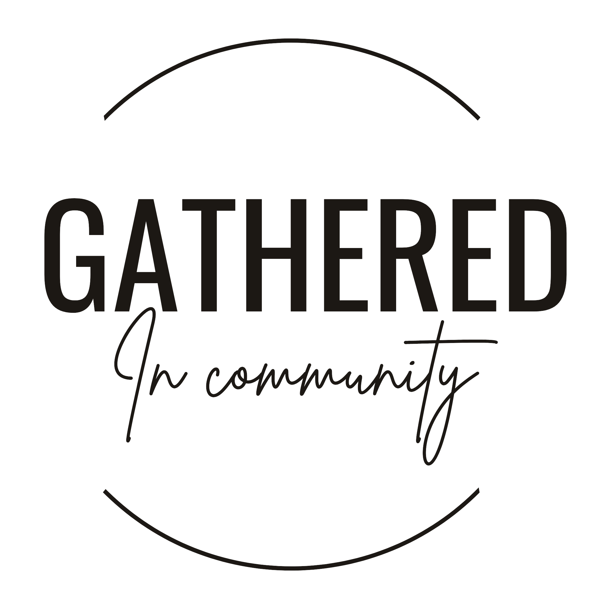

About
Welcome
I am Chardae Korhonen, a licensed clinical social worker, relational therapist, and the founder of Gathered in Community.

Why I started Gathered
We need each other.
Gathered was founded on a simple belief. Our lives are shaped by our relationships, with ourselves, with the people we love, and with the communities we are part of.
We all deserve spaces where we can show up as we are, be met with care, and feel a sense of belonging. Finding the kind of community and belonging we actually need has not always been easy.
Gathered in Community is a space for exploring what it means to know ourselves, connect with others, and create lives that feel more aligned with who we are and who we are becoming.
Replace with a portrait, roughly 4:5
Meet Chardae
Chardae Korhonen, LCSW
I am a licensed clinical social worker and relational therapist, and the founder of Gathered in Community.
[Two or three sentences about your background: where you trained, the settings you have worked in, and how you came to this work.]
[The approaches you draw on, for example relational, attachment-based, somatic, or narrative.]
- Licensed in
- [State or states]
- Years practicing
- [Number]
- Works with
- Individuals, couples, and multi-partner relationships
The approach
The personal and the collective, together.
Through workshops, training, community connections, and relational therapy, Gathered brings together the personal and the collective. Understanding ourselves is important. So is understanding the environments, relationships, and systems we are navigating.
Think of Gathered as a container for curiosity, connection, and growth.
At its heart, Gathered is about belonging, self-trust, connection, and the belief that we were never meant to figure all of this out alone.
Get started
Work with us
Tell us what you are looking for and we will point you toward the right place to begin.
Book a call